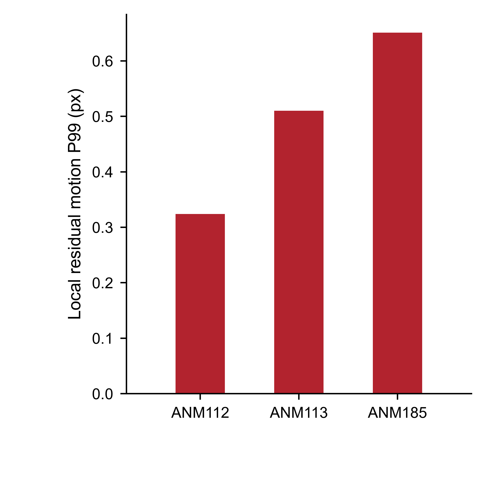
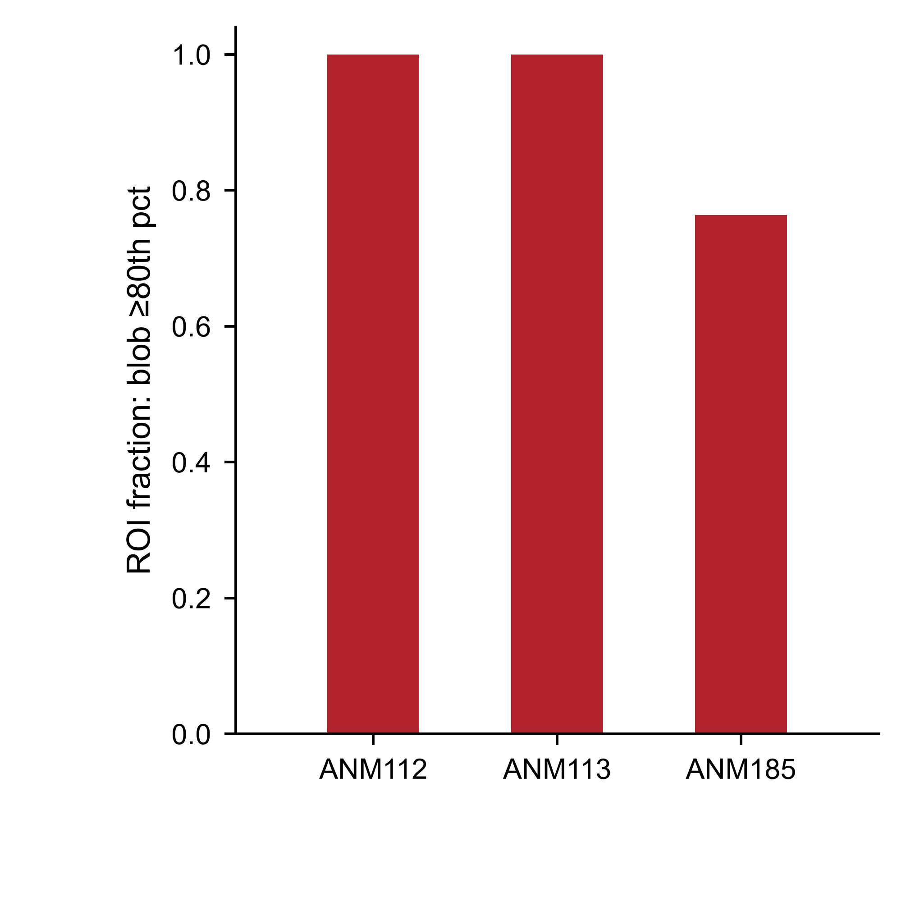
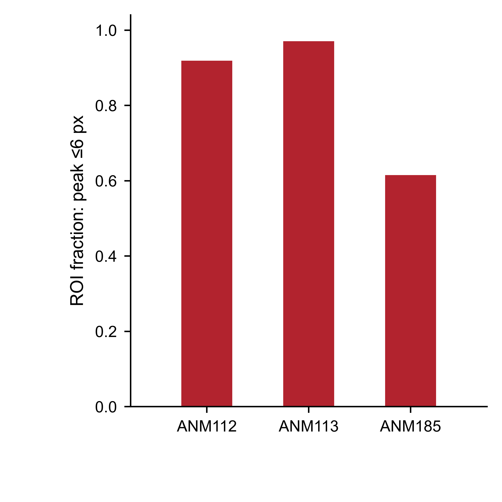

QC · strict V51
Motion, ROI validity and extraction robustness are displayed as separate evidence layers.
No single composite QC score is used. Imaging quality is not inferred from the number of linked behavioral trials.



Local residual motion · P99
Even the P99 tail remains <1 px in all three new current-VTA mice. PDF · SVG


Independent ROI support · blob
Canonical ROIs are independently supported by image-structure blobs. PDF · SVG


Independent ROI support · peak
Peak-distance support is shown separately rather than merged into one QC score. PDF · SVG